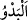
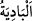

Hüzünler hücresinde eylediğim sabrın mükâfâtıdır
Allah’ım bizi vuslata erenlerden eyle!
“Doğrusu Rabbim bana (çok şey) lütfetti.” bana güzel muâmelede bulundu. Doğrusu
beni yaratan bana iyilik ve lütufta bulundu.
“Çünkü beni zindandan çıkardı” Kardeşlerini utandırmamak için kuyuyu zikretmedi.
Tam olarak affedip bağışlamanın gereği geçmişte olanları anmamaktır. Ayrıca Yûsuf
(a.s.), zindanda kâfirlerle birlikte iken kuyuda Cebrâil (a.s.) ile birlikteydi. Kuyuya
atıldığında küçük bir çocuktu. Küçük çocukların ise teşekkür etmesi gerekmez. Ayrıca
zindana girdiği zaman kuyuya girdiği vakitten daha yakın olduğundan sadece zindandan
bahsetti.
Birinci îzah daha tercihe şâyândır. Benzeri bir îzah Yûsuf (a.s.)’ın Züleyhâ hakkındaki
şu sözü için de yapılmıştı: “Efendine dön de ona: ‘Ellerini kesen o kadınların zoru
neydi?’ diye sor.” (Yûsuf, 12/50) Yûsuf (a.s.) orada da Züleyhâ’nın adını vermemişti.
Lokman (a.s.) der ki: “Ben dört bin peygamberin hizmetinde bulundum. Onların
sözlerinden şu sekizini seçtim:
1. Namazda kalbini,
2. Sofrada elini,
3. Başkasının evinde gözlerini,
4. İnsanlar arasında dilini koru.
İki şeyi hatırla ve iki şeyi unut: Hatırlayacağın iki şey Allah ve ölümdür. Unutacağın
iki şey ise başkalarına yaptığın iyilik ile başkalarının sana yaptığı kötülüktür.”
et-Te’vîlâtü’n-Necmiyye’de şöyle denilir: “O, beni varlık zindanından çıkardı.” Bu
sebeple “Beni beşeriyet kuyusundan çıkardı.” demedi. Allah’ın Yûsuf’u varlık
zindanından çıkarması nimeti ise, beşeriyyet kuyusundan çıkarma nimetinden daha
büyüktür.”
“Ve şeytan benimle kardeşlerimin arasını bozduktan” onları buna teşvik edip
dürttükten “sonra sizi çölden getirdi.”
Yûsuf (a.s.) aralarının bozulmasını şeytana isnâd ederek kardeşlerine gerçekten
ihsanda bulunmuştur. Fakir (Bursevî) der ki: “Edebe muvâfık olan, kötülüklerin nefse
ve şeytana isnâd edilmesidir. Çünkü her ne kadar bunların hepsi Allah’ın yaratmasıyla
meydana geliyorsa da kaynak ve menşe’leri nefis ile şeytandır.
el-Kamus’ta şöyle der: “
ve
(çöl)” şehrin zıddıdır. Sahrâ insanın gözüne
apaçık göründüğü için ona bâdiye (apaçık görünen) denmiştir. Çöldekilerin hayvanları
ve çadırları olur. Genellikle sulu ve otlak yerlere taşınırlar.”
Kâşifî şöyle der: “O yer, Filistin’de Şam bölgesindeydi. Yâkub (a.s.) orada otururdu.